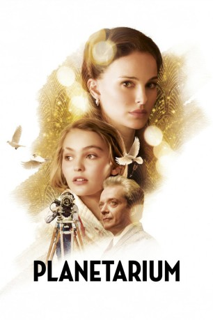
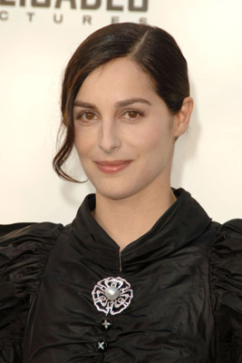

#9003 Das Geheimnis der zwei Schwestern
Alternativ: The Summoning (Englischer Titel)
 
 IMDB-Wertung: 4.7 / 10
IMDB-Wertung: 4.7 / 10  Metascore: 0
Metascore: 0 
In 1930s restless Paris, the American sisters and spiritual mediums Laura and Kate Barlow are an authentic psychic act touring pre-war Europe, where before an astounded audience, sceptical but curious spectators join them onstage for a hypnotic séance with the dearly departed. During a performance, a well-off film producer, André Korben, dazzled by the sisters' genuine psychic ability, will hire them for an ambitious film project which would contribute to the evolution of the French film industry, just by capturing even the faintest suggestion of a real paranormal manifestation. Little by little, the war creeps in and Korben's reputation rests entirely on the success of this single effort, nevertheless, are the Barlow Sisters nothing but an elaborate act or do they actually possess the dark gift?
Jahr: 2016
Dauer: 108 Minuten
FSK: 12
Land: Frankreich Studio: Ad Vitam DistributionTonspuren:
Untertitel: Deutsch,
Auflösung: 1080p (1920x808) Größe: 4198 MB
Genre: Thriller, Drama, Fantasy, Liebe, Mystery
Regisseur: Rebecca Zlotowski
Drehbuch: Rebecca Zlotowski
Soundtrack: Robin Coudert
Darsteller:
 Natalie Portman als Laura Barlow
Natalie Portman als Laura Barlow- Lily-Rose Depp als Kate Barlow
-  Amira Casar als Eva Saïd
 Louis Garrel als Fernand Prouvé
Louis Garrel als Fernand Prouvé David Bennent als Juncker
David Bennent als Juncker- Damien Chapelle als Louis
- Christophe Odent als Ange Ceccadi
- Kamel Abdelli als Bonell
- Scali Delpeyrat als Scali
- Rosa Bursztein als Opératrice standard
- Kate Moran als Personne terrasse café
 Audrey Quoturi als Une nudiste (uncredited)
Audrey Quoturi als Une nudiste (uncredited)- Emmanuel Salinger als André Korben
- Pierre Salvadori als André Servier
- Jerzy Rogulski als Professeur Ulé
- Camille Lellouche als La mariée
- Michel Zlotowski als Père Korben
- Talina Boyaci als Mme Lefebvre
- Benoît Forgeard als Médecin
- Maryline Even als Odette
- Allain Naron als Martin
- Sophie De La Rochefoucauld als La consultante
- Julie Moulier als La solliciteuse
- Anaïs Couette als Traductrice cabaret
- Stephen Harrison als Kitching
- Alexandre Zloto als Chaumette
- Orazio Casale als Membre conseil
- Frédéric Daniel als Membre conseil
- Patrick Nardon als Membre conseil
- Olivier Nicklaus als Membre conseil
- Anthony Cochin als Actionnaire
- Philippe Rigot als Actionnaire
- Cédric Weber als Actionnaire
- Cédric Zimmerlin als Actionnaire
- Mathieu Ribault als Jeune homme Korben
- Brice Michelini als Cadreur
- Virgil Vernier als Cadreur équipe sud
- Antonia Buresi als Scripte
- Roch Leibovici als Policier
- Alexandre Michel als Policier
- Sarah Stern als Préceptrice
- Margaux Fabre als La jeune fille au plâtre
- Laure-Lucille Simon als Personne terrasse café
- Eve Bitoun als Personne terrasse café
- Ulysse Cottin als Personne terrasse café
- Marie-Anne Prins Jorge als Personne terrasse café
- Paolo Handel als Personne terrasse café
 Paul Spera als Personne terrasse café
Paul Spera als Personne terrasse café- Kélia Bloc als Femme pique-nique
- Rico Simmons als Homme pique-nique
Datei: X:\2016(G-M)\Geheimnis der zwei Schwestern, Das (2016, FSK12, 1920x808).mkv seit 17.05.2018
Festplatte: HD 2016(A-Z)
 Es gibt insgesamt 164 Filme in der Gruppe '2016(G-M)'
Es gibt insgesamt 164 Filme in der Gruppe '2016(G-M)'